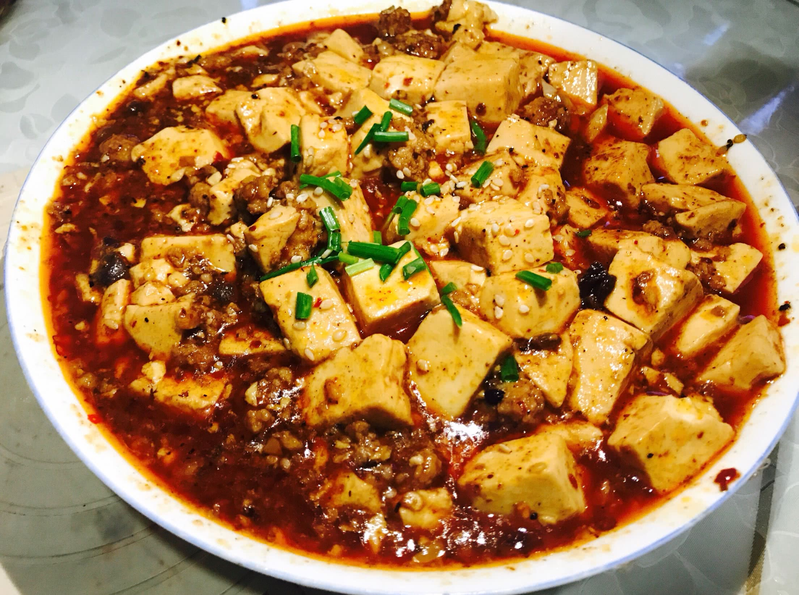

麻婆豆腐
麻婆豆腐是川菜经典名菜，始创于清朝同治年间，以豆腐为主料，配以牛肉末和辣椒、花椒等调料烹制而成。 具有麻、辣、烫、香、酥、嫩、鲜、活等特点，是川菜中最具代表性的菜品之一。
主要食材
- 嫩豆腐 400克
- 牛肉末 100克
- 郫县豆瓣酱 2汤匙
- 豆豉 1汤匙
- 花椒粉 1茶匙
- 辣椒粉 1茶匙
- 蒜苗 2根
- 姜蒜末 适量
- 食用油 适量
- 淀粉 1茶匙（用于勾芡）
- 高汤或清水 200毫升
营养成分（每100克）
- 热量：125千卡
- 蛋白质：8.2克
- 脂肪：7.5克
- 碳水化合物：4.3克
- 纤维素：1.2克
- 钠：420毫克
详细做法步骤
- 将豆腐切成2厘米见方的小块，放入淡盐水中浸泡10分钟，然后捞出沥干水分。
- 蒜苗切成小段，姜蒜切末，豆豉剁碎备用。
- 锅中加水烧开，放入少许盐，将豆腐块放入焯水1分钟，捞出沥干。
- 热锅凉油，放入牛肉末煸炒至变色，出香味。
- 加入郫县豆瓣酱和豆豉碎，小火炒出红油和香味。
- 放入姜蒜末继续翻炒，然后加入辣椒粉炒匀。
- 倒入高汤或清水，烧开后放入焯好水的豆腐块。
- 小火煮5分钟，让豆腐充分吸收汤汁的味道。
- 用水淀粉勾芡，使汤汁变得浓稠。
- 撒上一半的花椒粉和蒜苗段，轻轻推匀。
- 出锅装盘，再撒上剩余的花椒粉和少许蒜苗点缀即可。
烹饪小贴士
- 选择嫩豆腐（南豆腐）口感更佳，但操作要轻柔避免破碎
- 豆腐焯水时加少许盐，可以使其更紧实不易碎
- 炒豆瓣酱时一定要用小火，才能炒出红油和香味
- 勾芡可以分两次进行，第一次让汤汁稍微浓稠，第二次达到理想状态
- 花椒粉最好分两次加入，出锅前撒一次，装盘后再撒一次，香味更有层次